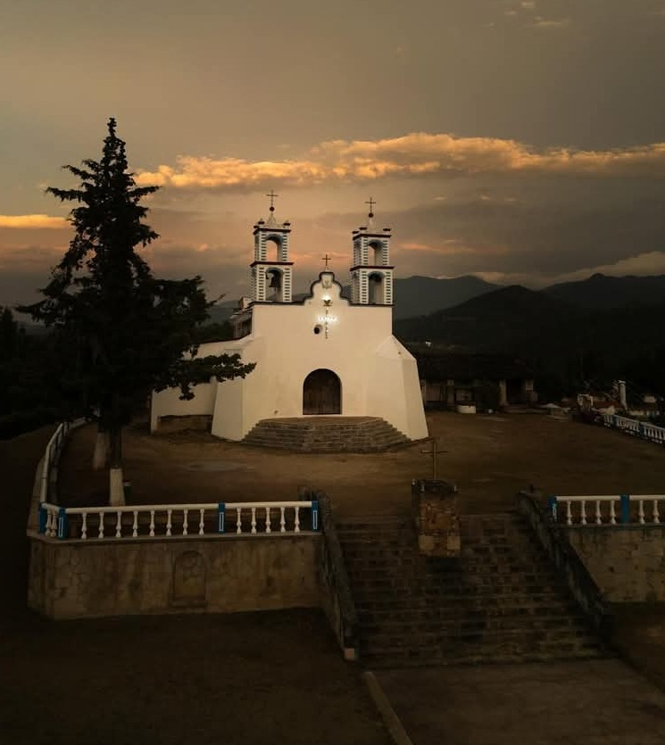

|
| |
| Principal Historia Curiocidades Ubicacion Contacto | Santa María Cuquila tiene el privilegio de contar con una zona arqueológica llamada “Ñuu Kuiñi” o Pueblo del Tigre, también se le conoce con el nombre de “la Cacica”, que era un centro cívico ceremonial-residencial que floreció en el clásico temprano (300 a.c. - 300 d.c.) fue Historia y ubicación parcialmente ocupado hasta su abandono, una característica que sobresale del sitio arqueológico Ñuu Kuiñi, es su extraordinario juego de pelota, cuyas dimensiones los hacen notar como el centro rector de la acrópolis, cuyo dominio sobre el entorno físico unifica la pequeña ciudad que albergaba a 2000 códices mixteco “Ñuu Kuiñi”, la formación geológica de las paredes del cerro es cóncava y se asemeja a un embudo en mitades, lo que les facilitaba el dominio de la observación a distancia. En la comunidad existe un santuario que venera a la Virgen de Juquilacuya fiesta es el 8 de diciembre, la influencia de fieles proviene de muchas comunidades vecinas y otras lejanas, además de visitar y conocer las ruinas arqueológicas como un punto destacado de nuestros antepasados en la Mixteca Oaxaqueña
 |